PSMC
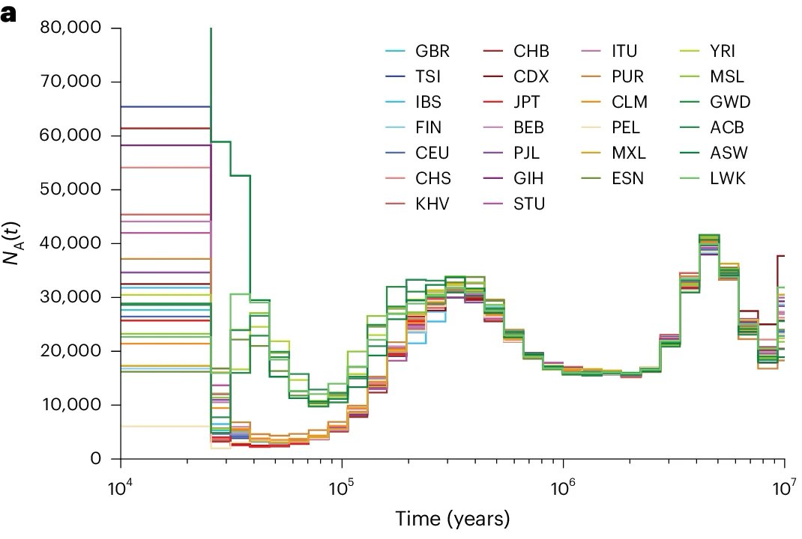
Source: Cousins et al. (2025)
GONE
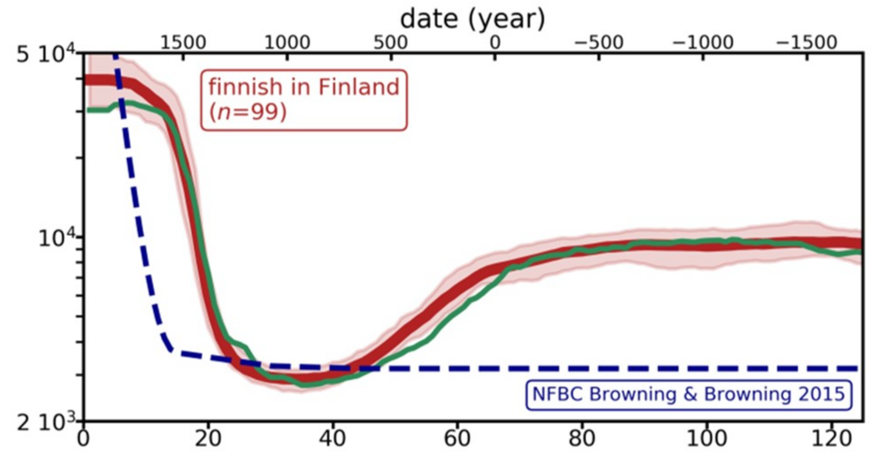
Source: Santiago et al. (2020)
Infer best-likelihood parameters of the model
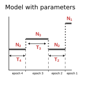
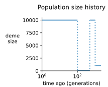
An epoch is a time interval during which the population size is either constant or changes at a constant, specified rate
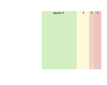
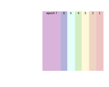
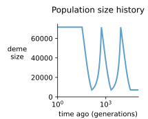
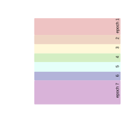
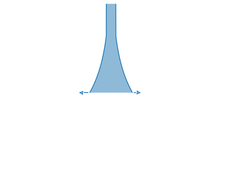
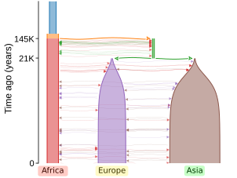
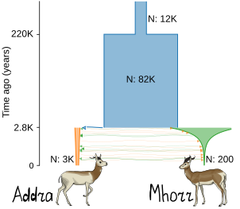
drawn by demes [Gower et al. 2022]
An epoch is a time interval during which all populations’ sizes and migration rates are either constant or change at constant, specified rates
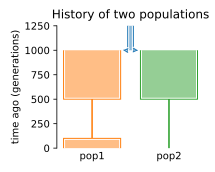
Examples:
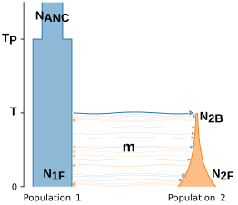
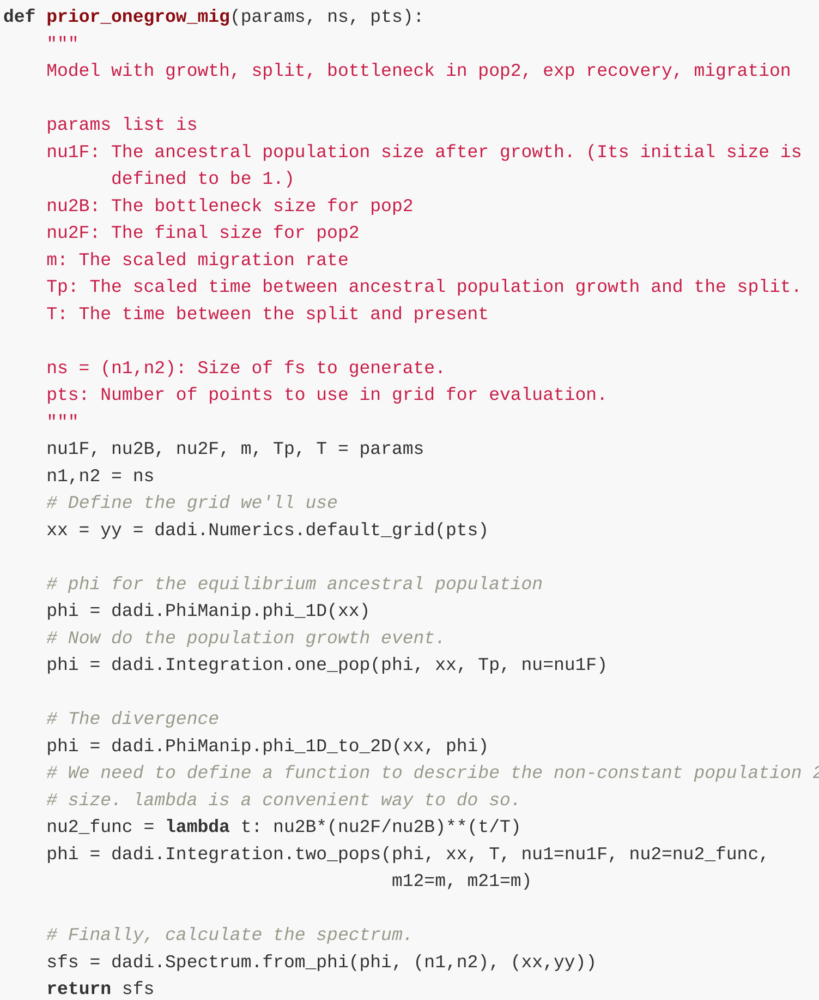
Specification
for $\partial a \partial i$
GADMA — Global search Algorithm for Demographic Model Analysis
[Noskova et al. 2020] [Noskova et al. 2023]
New model in GADMA that is specified only by the number of epochs.
Available up to three populations
New model in GADMA has flexible dynamics of population size change.
Population dynamic can be:
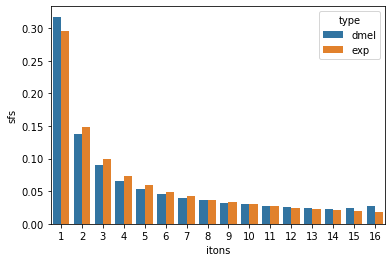
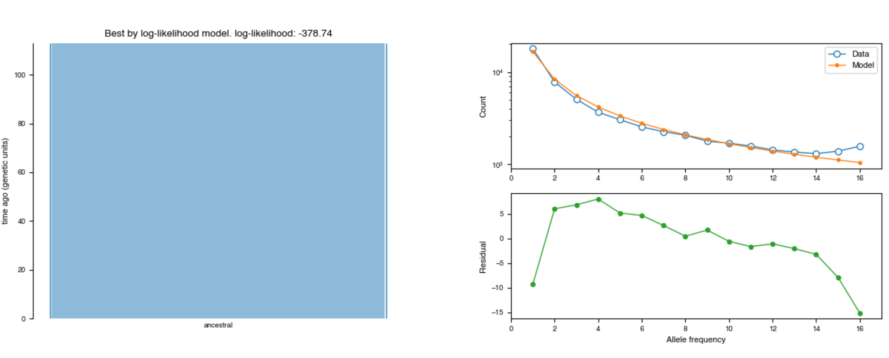
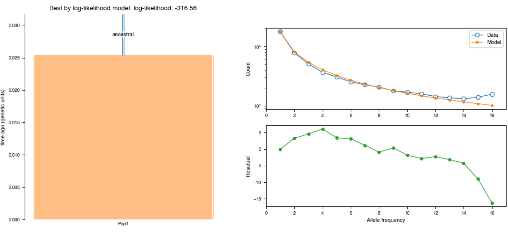
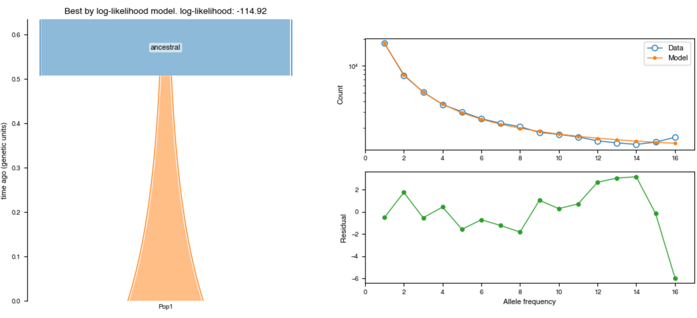
*is basically two-epochs history, but we cannot cover this case with two epochs in GADMA
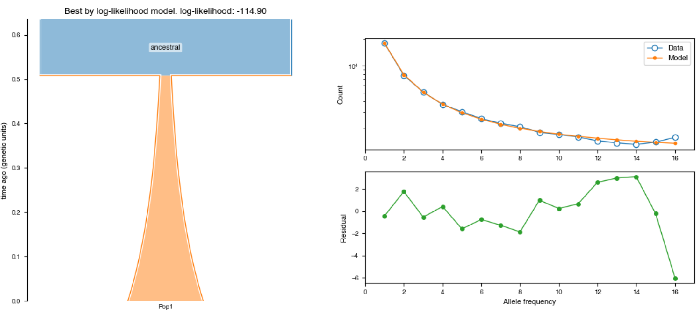
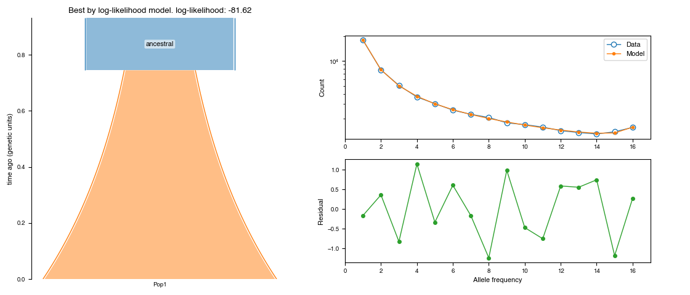